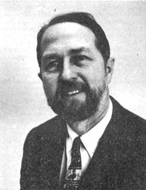

About a year and a half ago Bruce McDuffie-an upstate New York chemistry professor - prodded by his wife and a 17-year-old lab assistant, went to a supermarket, bought some tuna fish and tested it for mercury contamination. The rest is, as they say, history. The resulting tuna scare destroyed the U.S. swordfish industry and crippled the tuna fishermen (see MOTHER NO. 9).
Recently the same chemist went shopping again . . . and guess what? One fourth of the cans of tuna he found on-supermarket shelves were as contaminated as those that caused the public outcry. Meaning: FDA assurances to the contrary, nothing has been effectively done to end contamination of tuna.
"I'm very surprised," says Prof. McDuffie, an analytical chemist specializing in environmental research at the State University of New York at Binghamton. "I don't know how much testing the FDA has been doing. Have they been leaving it to the fishing industry?" If further testing confirms his results, McDuff ie says, the FDA should institute a program for "close auditing and continuing inspection" of tuna. He favors a bill now before the Senate which would require a daily inspection of each of the 2,000 tuna packing plants in the U.S.
While the FDA's ineffectiveness hardly makes news these days - many observers agree it protects those industries it supposedly regulates - McDuff ie continues to grab headlines, chipping away at bureaucratic sabotage of environmental progress. Recently, for example, he publicly protested the intrusion of Cold War politics into the UN's Conference on the Human Environment held this past June in Stockholm.
Because the East Germans have not been invited to participate in the air pollution conference, Russia and its East European allies are boycotting the meeting. McDuffie, calling for a "truly worldwide" conference, has appealed to American representatives to the conference and to Kurt Waldheim, the new Secretary General of the UN, to invite the East Germans. "Otherwise," he says, "how can we expect to solve pollution problems which transcend national boundaries?"
McDuffie has won one recent battle. Last October, after a child in New York City died of lead poisoning, and at the request of an investigative reporter, he tested the lead content of paint on pencils. McDuffie found up to 18 times the permissible level of lead in some brands of pencils and, partly as a result of his findings, the State Attorney General has asked for a permanent injunction barring the sale of "poison pencils".
The chemist's persistence has begun to pay off personally too. First, no doubt as a result of the tuna-mercury publicity, McDuffie has landed a $14,400 grant from the Rockefeller Foundation to inventory the Susquehanna River for possible contamination by trace metals. Second, he has gained a little political clout: Prof. Bruce McDuffie has been chosen as a McGovern delegate tee the Democratic National Convention.
|
 |
|
|